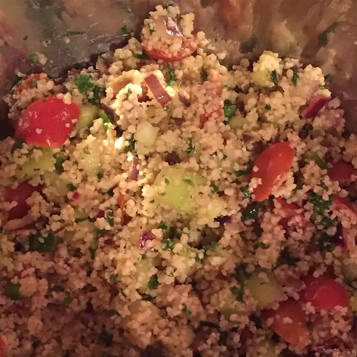

Couscous

Description
This is a couscous recipe packed with fresh summer veggies. It goes really well with grilled salmon to make a light and flavorful meal.
Ingredients (4 servings)
- 1/2 cup chicken broth
- 1/2 cup couscous
- 2 tablespoons olive oil
- 8 cherry tomatoes, quartered
- 1/4 red onion, diced
- 2 green onions, chopped
- 1/4 cup seeded, diced cucumber
- 2 tablespoons chopped fresh parsley
- 1 tablespoon lemon juice
- salt and ground black pepper to taste
Steps
- Place the chicken broth in a small saucepan over medium heat and heat until just about to boil.
- Place the couscous in a bowl; stir the warm chicken broth and 2 tablespoons olive oil into the couscous. Add the tomatoes, red onion, green onions, cucumber, parsley, and lemon juice. Cover the bowl with plastic wrap and allow to steam for 5 minutes. Uncover and fluff the couscous with a fork. Stir to mix the vegetables evenly through the dish. Season with salt and pepper to serve.